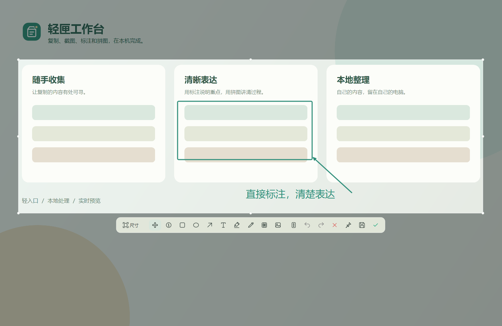
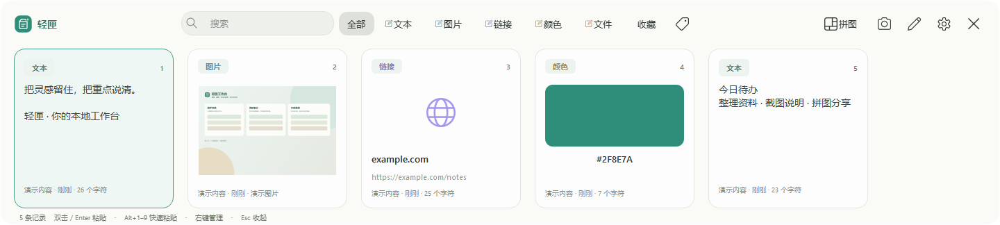

复制之后，还有下文。
文字、图片、链接、颜色和文件，自动收进剪贴板历史。搜索、收藏、标签，让内容更容易找。
Ctrl+Alt+V唤起剪贴板
留住复制的灵感，标出截图的重点。
再把零散图片，拼成一张完整的表达。
Windows 10 / 11 · 64 位 · 免费开源


少一些来回，多一点顺手
文字、图片、链接、颜色和文件，自动收进剪贴板历史。搜索、收藏、标签，让内容更容易找。
直接在截图上输入文字，拖动标注调整位置。箭头、高亮、马赛克和滚动长图，把重点说明白。
长图、网格或主图布局，六种模板自由切换。调整留白与圆角，透明背景让成图更好搭配。
六种布局 · 实时预览 · 透明背景自己的内容，留在自己的电脑
历史记录与图片保存在本地，不需要注册轻匣账号。
你可以暂停记录、清理未收藏内容，也可以自行备份数据。
历史数据库未加密。复制敏感信息前，可先暂停记录。
准备好，收进轻匣
完整解压，运行 QingXia.exe，即可开始使用。
Windows 10 / 11 · x64 便携版 · 无需安装 Python
保留完整文件夹，不要只移动 EXE。
程序驻留系统托盘，从托盘可以设置或退出。
Ctrl + Alt + V 打开剪贴板，也可自行修改。
开始之前
免费，源码以 GPL-3.0-only 许可发布。你可以在 GitHub 查看代码、提交问题，并参与改进。
程序和数据分开保存。升级时先从系统托盘退出旧版本，再解压新版。历史与设置位于 %LOCALAPPDATA%\QingXia\data，可在退出程序后备份。移动程序目录后，请重新开启自启动。
长图拼接需要稳定的重叠内容。已截取的动态画面会保留当时的静帧，但复杂动画、固定悬浮层和跳跃滚动仍可能影响匹配。单次截图选区不跨显示器。
在 Release 页面查看版本与下载，在 Issues反馈问题。初次公开版本为 v0.1.0；当前 Windows 包尚未进行代码签名。